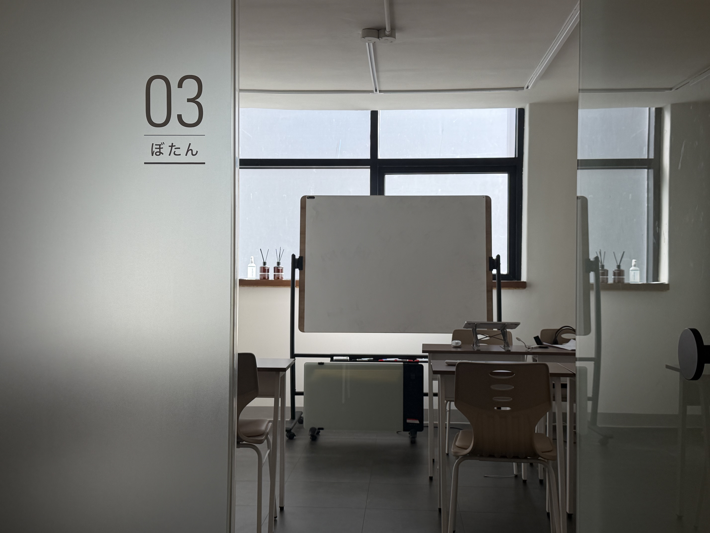

N1·N2 목표가 있어요
목표 급수는 정했지만 어떤 영역에 시간을 더 써야 할지 고민인 학생에게 맞습니다. 어휘·문법·독해·청해 중 혼자 설명하기 어려운 부분을 먼저 정리해 보세요.
PROGRAM / JLPT
학생도 직장인도, 목표 급수와 생활 일정에 맞춰 일본어를 준비하세요.
N1·N2를 목표로 공부하면서 부족한 영역을 정리하고 싶은 분을 위한 안내입니다. 현재 사용하는 교재와 최근 풀이 기록을 통해 이어서 준비할 내용을 살펴보세요.

01 / FOR YOU
목표 급수는 정했지만 어떤 영역에 시간을 더 써야 할지 고민인 학생에게 맞습니다. 어휘·문법·독해·청해 중 혼자 설명하기 어려운 부분을 먼저 정리해 보세요.
문법 설명은 이해해도 지문에서 같은 표현을 만나면 헷갈리는 분에게 맞습니다. 표현의 의미와 문장 속 역할을 함께 살피며 읽기와 듣기에 연결해 보세요.
업무와 학습을 함께 이어가려는 성인 학습자에게 맞습니다. 평일 저녁이나 주말 중 희망하는 시간과 복습할 수 있는 시간을 구분해 알려 주세요.
02 / ONE TO ONE
관심 과정과 목표 일정, 공부할 수 있는 시간을 알려 주세요. 최근 교재와 학습 기록을 준비해 주세요.
최근 문제와 작성한 글을 함께 살펴봅니다. 익숙한 부분과 어려운 부분을 나누어 현재 위치를 정리합니다.
현재 수준과 목표에 맞춰 1:1로 준비합니다. 학습 순서와 복습할 내용을 함께 정리합니다.
이전 학습을 다시 살펴보고 다음 과제를 정리합니다. 혼자 설명할 수 있게 된 부분을 확인합니다.
새로운 표현은 예문을 만들거나 지문에서 찾아보세요. 선택한 답의 근거와 헷갈린 표현을 함께 남기면 다음 복습할 부분이 분명해집니다.
03 / CURRICULUM
목표 급수와 최근 학습 자료를 살펴봅니다. 문법·독해·청해에서 자주 막히는 부분을 구분하고 복습할 내용을 정리합니다.
배운 어휘와 문법을 문장 속에서 확인합니다. 읽고 들은 내용을 자신의 말로 설명하며 의미를 놓친 부분을 살펴봅니다.
이전 오답을 다시 풀고 풀이 근거를 설명해 봅니다. 학습 기록을 비교하며 다음에 집중할 영역과 공부 시간을 정리합니다.
추천 시작 시기는 목표 급수와 현재 학습 수준을 함께 고려해 정합니다. 직장인은 바쁜 업무 시기와 평일 저녁·주말의 희망 시간을 상담에서 알려 주고 실제 가능한 시간표를 확인해 주세요.
04 / UNIVERSITIES
아래 수강 후기에서 확인되는 합격 대학입니다.
05 / REVIEWS
하지만 선생님을 만나서 N2문법부터 처음부터 다시 잡고 일본어에 조금씩 감을 잡기 시작했습니당!!
2년 넘게 선생님한테 과외를 받았는데 부족하고 잘 안되는 일본어 부분들을 유동적으로 관리해주신 덕분에 실력 향상도 되고 입시에서 좋은 결과를 얻을 수 있었어요
06 / TUITION
강사 1:1
주 1회 · 월 4회
1회 90분
원장 직강 1:1
주 1회 · 월 4회
1회 90분
3개월 이상 등록 시 10%, 6개월 이상 등록 시 15% 할인됩니다. 자세한 내용은 상담에서 안내해 드립니다.
주 1·2·3회는 각각 월 4·8·12회 기준입니다. 위 금액은 1:1 수업 기준이며, 그룹 수강료는 1인당 금액입니다.
07 / Q&A
최근 공부한 내용과 어려운 영역을 기준으로 상담해 주세요. 교재의 급수뿐 아니라 실제로 이해하고 설명할 수 있는 범위를 함께 살펴보면 준비 방향을 정리하기 좋습니다.
업무 일정과 희망 수업 시간을 알려 주세요. 평일 저녁과 주말 중 가능한 시간을 나누어 적고, 수업 사이에 확보할 수 있는 복습 시간도 함께 정리해 주세요.
헷갈렸던 문장과 풀이 근거를 가져와 주세요. 단어의 의미, 문장 구조와 앞뒤 문맥 중 어디에서 이해가 끊겼는지 나누어 보면 다음에 복습할 내용을 찾기 좋습니다.
CONSULTATION
목표 급수와 최근 공부한 내용, 희망 요일을 알려 주세요. 학생의 학교 일정과 직장인의 업무 일정을 함께 고려해 준비 방향을 상담합니다.
신사역 8번 출구 · 도보 10분 · 발렛 주차 가능
최종 수정일: 2026.10.16